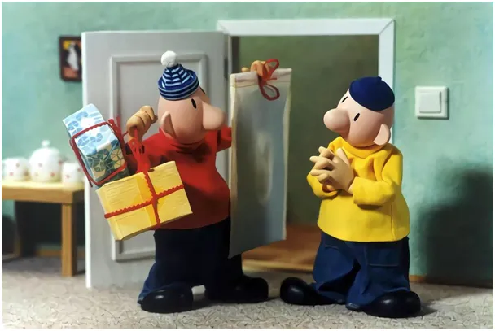
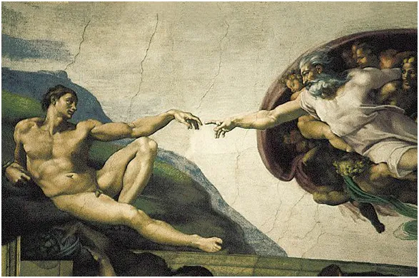
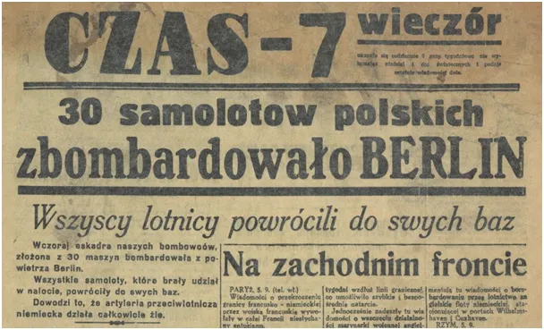
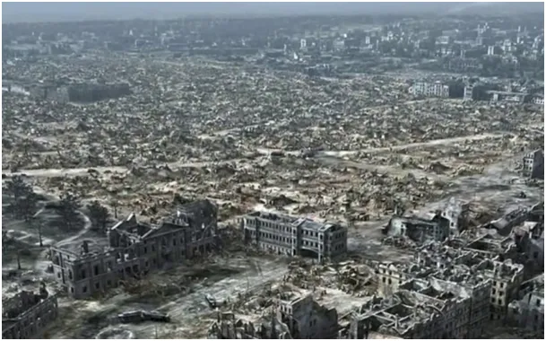
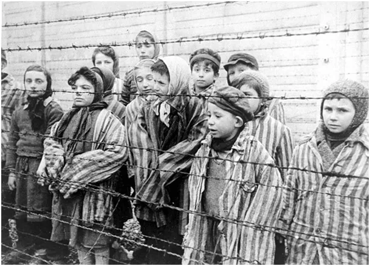

Ostrożnie z prasą, szczególnie we wrześniu!
I tak zaczynamy nowy miesiąc kalendarzowy. Wrzesień zmienia wszystko. Fatalne wydarzenia z 1 września 1939 są przestrogą nie tyle przed samą wojną, bo tej prawie zawsze można uniknąć, co przed budowaniem fatalnych relacji z sąsiadami. Większość z nas nie ma wpływu na politykę międzynarodową, ale mamy swoich sąsiadów. Mówmy im zawsze pierwsi dzień dobry, a gdy wyjeżdżamy z domu i mamy w lodówce coś, co nie przetrwa kilku dni, np. świeży, otwarty biały ser czy wędlinę, zanieśmy im zamiast wyrzucać do kosza po powrocie. Będą zaskoczeni, i o to chodzi.

Wcześnie rano znalazłem w tym roku pierwszego kasztana. Koniec wakacji, ale i piękne wspomnienia. Szkoła, nowe wyzwania w starej pracy, nowa praca i stare wyzwania. Wielu z nas nie pracuje, ale wszyscy odkrywamy coś nowego na świecie. To się nigdy nie kończy, co dzień musimy weryfikować swoje zdanie o świecie. Jeśli zbyt długo mamy jedno przekonanie o porządku świata powinno nas to niepokoić.

Ktoś mądry powiedział, że jeśli jesteś po stronie większości to czas się głęboko zastanowić nad sobą. Bardzo polecam książkę, która mnie kiedyś mocno zmieniła: Józef Maria Bochenski- "Podręcznik mądrości". Dziś możemy wygodnie sobie posłuchać dobrego lektora: (Zanim klikniecie przeczytajcie tekst do końca) https://youtu.be/2isiaaex3XM?t=12 Myślę, że ten polski filozof o światowej sławie, był bardzo pod wpływem "Księgi mądrości" spisanej, jako depozyt najcenniejszej wiedzy wyniesionej przez Żydów z Egiptu. Też do odsłuchania https://www.biblijni.pl/Mdr,1,1-5

Nie byłoby łacińskiej Europy w kształcie, jaki znamy, gdyby nie długa niewola Izraelitów w Egipcie. Mojżesz żył ponad 1500 lat przed Chrystusem, ale jego życie było kluczowe dla powstania chrześcijaństwa.
W tej perspektywie życie każdego z nas wydaje się prochem w lawinie dziejów, jednak to każdy z nas tworzy przyszłość na tysiące lat do przodu. To wielka odpowiedzialność. Żyjemy w pięknej cywilizacji, nawet, jeśli w głębokim kryzysie to bronimy pięknego świata.

Polska w XX wieku była, i jest ciągle ofiarą olbrzymiego barbarzyństwa. Wymordowanie kilku milionów obywateli Polski, w imię rasowej ideologii nie mieści się nam w głowach, ale to miało miejsce niespełna 80 lat temu. Tym bardziej nie do przyjęcia są jakikolwiek ideologie traktujące człowieka, jako zagrożenie dla świata i innych ludzi.

Mamy w mainstreamie narrację przedwyborczą, że za niemieckie zbrodnie musimy dostać ileś tam bilionów złotych. To są mrzonki. Kwestie rozliczeń za Drugą Wojnę Światową są już zakończone od 10 lat a do dziś Niemcy nie mogą od USA dostać setek ton swojego złota zdeponowanego w skarbach USA. Wysłaliśmy do Berlina rachunek za śmierć i rabunek. A co zrobimy jak nie wypłacą nam ? "Zbombardujemy Berlin" jak we wrześniu 1939 roku pisała prasa w Warszawie? Prasa historycznie to taki duży ciężar, który do papieru przykleja czarną farbę, dziś jest to każdy edytor tekstu. Biały papier przyjmie dowolne litery w dowolnej kolejności. Ostrożnie z prasą, plami dłonie i rozum!
Paweł Klimczewski